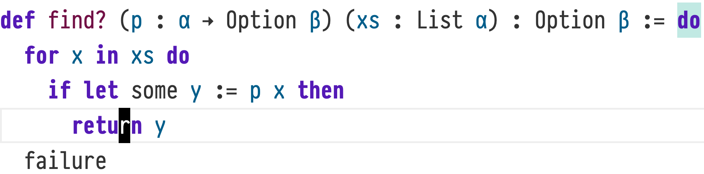
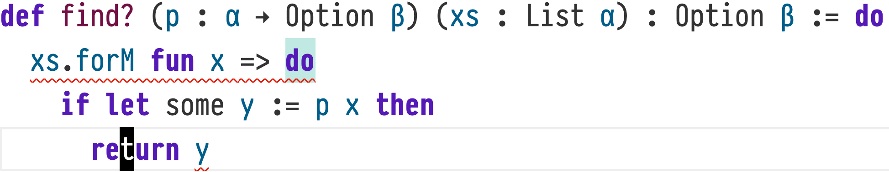

ProofScript — 18.3. Syntax
Reference home · Grammar: ps-0.9-r2 · Semantic pin: Lean 4.34.0 stable.
Functor, applicative and monad interfaces are ordinary typeclasses and definitions. Their laws are separate propositions, not automatic consequences of defining methods. The order of StateT and ExceptT changes failure and state behavior. do is native sequencing, not a JavaScript statement language. Local mutation, loops and return use that grammar and its scope.
Compiler and coverage boundary. Native semicolons within do and local let expressions remain valid. Do not remove all semicolons, reinterpret every newline, or assume discarding a state value reverses external effects.
Inherited detail and attribution. The section below is adapted from the Apache-2.0 Lean reference mirrored at Functors___-Monads-and--do--Notation/Syntax/index.html. Source Git blob: cb34a939c411367c788cf48aa7d45e5bd0b3f868. Its prose, API signatures and native names are retained where they describe the inherited semantics. Selected definition-keyword presentation aliases are recorded separately, not certified by a PSC parser. Native toolchains, intentional errors and historical releases keep their actual identities. The mirror contains rc2 material; the stable pin and stable-delta audit override conflicting claims.
18.3. Syntax
Lean supports programming with functors, applicative functors, and monads via special syntax:
- Infix operators are provided for the most common operations.
- An embedded language called
do-notation allows the use of imperative syntax when writing programs in a monad.
18.3.1. Infix Operators
Infix operators are primarily useful in smaller expressions, or when there is no Monad instance.
18.3.1.1. Functors
There are two infix operators for Functor.map.
syntax
Functor Operators
g <$> x is short for Functor.map g x.
term ::= ...
| term <$> term
x <&> g is short for Functor.map g x.
term ::= ...
| term <&> term
18.3.1.2. Applicative Functors
syntax
Applicative Operators
g <*> x is short for Seq.seq g (fun () => x). The function is inserted to delay evaluation because control might not reach the argument.
term ::= ...
| term <*> term
e1 *> e2 is short for SeqRight.seqRight e1 (fun () => e2).
term ::= ...
| term *> term
e1 <* e2 is short for SeqLeft.seqLeft e1 (fun () => e2).
term ::= ...
| term <* term
Many applicative functors also support failure and recovery via the Alternative type class. This class also has an infix operator.
syntax
Alternative Operators
e <|> e' is short for OrElse.orElse e (fun () => e'). The function is inserted to delay evaluation because control might not reach the argument.
term ::= ...
| term <|> term
structure User where
name : String
favoriteNat : Nat
const main : IO Unit := pure ()
Infix Functor and Applicative Operators
A common functional programming idiom is to use a pure function in some context with effects by applying it via Functor.map and Seq.seq. The function is applied to its sequence of arguments using <$>, and the arguments are separated by <*>.
In this example, the constructor User.mk is applied via this idiom in the body of main.
const getName : IO String := do
IO.println "What is your name?"
return (← (← IO.getStdin).getLine).trimAsciiEnd.copy
partial const getFavoriteNat : IO Nat := do
IO.println "What is your favorite natural number?"
let line ← (← IO.getStdin).getLine
if let some n := line.trimAscii.copy.toNat? then
return n
else
IO.println "Let's try again."
getFavoriteNat
structure User where
name : String
favoriteNat : Nat
deriving Repr
const main : IO Unit := do
let user ← User.mk <$> getName <*> getFavoriteNat
IO.println (repr user)
When run with this input:
stdin``A. Lean User``None``42
it produces this output:
stdout``What is your name?``What is your favorite natural number?``Let's try again.``What is your favorite natural number?``{ name := "A. Lean User", favoriteNat := 42 }
18.3.1.3. Monads
Monads are primarily used via do-notation. However, it can sometimes be convenient to describe monadic computations via operators.
syntax
Monad Operators
act >>= f is syntax for Bind.bind act f.
term ::= ...
| term >>= term
Similarly, the reversed operator f =<< act is syntax for Bind.bind act f.
term ::= ...
| term =<< term
The Kleisli composition operators Bind.kleisliRight and Bind.kleisliLeft also have infix operators.
term ::= ...
| term >=> term
term ::= ...
| term <=< term
18.3.2. do-Notation
Monads are primarily used via
do-notation, which is an embedded language for programming in an imperative style. It provides familiar syntax for sequencing effectful operations, early return, local mutable variables, loops, and exception handling. All of these features are translated to the operations of the Monad type class, with a few of them requiring addition instances of classes such as ForIn that specify iteration over containers. For more details about the design of do-notation, please consult Ullrich and de Moura (2022)Sebastian Ullrich and Leonardo de Moura, 2022. “do Unchained: Embracing Local Imperativity in a Purely Functional Language”. In Proceedings of the ACM on Programming Languages: ICFP 2022..
A do term consists of the keyword do followed by a sequence of
do elements.
syntax
do-Notation
term ::= ...
| do doSeqItem*
The elements in a do may be separated by semicolons; otherwise, each should be on its own line and they should have equal indentation.
18.3.2.1. Sequential Computations
One form of do-element is a term.
syntax
Terms in do-Notation
doSeqItem ::= ...
| term
A term followed by a sequence of elements is translated to a use of bind; in particular, do e1; es is translated to e1 >>= fun () => do es.
do Element |
Desugaring |
|---|---|
proofscript<br>do<br>e1<br>es<br> |
proofscript<br>e1 >>= fun () => do es<br> |
The result of the term's computation may also be named, allowing it to be used in subsequent steps. This is done using let.
syntax
Data Dependence in do-Notation
There are two forms of monadic let-binding in a do block. The first binds an identifier to the result, with an optional type annotation:
doSeqItem ::= ...
| let ident(:term)? ← term
The second binds a pattern to the result. The fallback clause, beginning with |, specifies the behavior when the pattern does not match the result.
doSeqItem ::= ...
| let term ← term
(| doSeqIndent)?
This syntax is also translated to a use of bind. do let x ← e1; es is translated to e1 >>= fun x => do es, and fallback clauses are translated to default pattern matches. let may also be used with the standard definition syntax := instead of ←. This indicates a pure, rather than monadic, definition:
syntax
Local Definitions in do-Notation
doSeqItem ::= ...
| let (ident | hole) := term
do let x := e; es is translated to let x := e; do es.
do Element |
Desugaring |
|---|---|
proofscript<br>do<br>let x ← e1<br>es<br> |
proofscript<br>e1 >>= fun x =><br> do es<br> |
proofscript<br>do<br>let some x ← e1?<br> | fallback<br>es<br> |
proofscript<br>e1? >>= fun<br> | some x => do<br> es<br> | _ => fallback<br> |
proofscript<br>do<br>let x := e<br>es<br> |
proofscript<br>let x := e<br>do es<br> |
Within a do block, ← may be used as a prefix operator. The expression to which it is applied is replaced with a fresh variable, which is bound using bind just before the current step. This allows monadic effects to be used in positions that otherwise might expect a pure value, while still maintaining the distinction between describing an effectful computation and actually executing its effects. Multiple occurrences of ← are processed from left to right, inside to outside.
Example do Element |
Desugaring |
|---|---|
proofscript<br>do<br>f (← e1) (← e2)<br>es<br> |
proofscript<br>do<br>let x ← e1<br>let y ← e2<br>f x y<br>es<br> |
proofscript<br>do<br>let x := g (← h (← e1))<br>es<br> |
proofscript<br>do<br>let y ← e1<br>let z ← h y<br>let x := g z<br>es<br> |
Example Nested Action Desugarings
In addition to convenient support for sequential computations with data dependencies, do-notation also supports the local addition of a variety of effects, including early return, local mutable state, and loops with early termination. These effects are implemented via transformations of the entire do block in a manner akin to monad transformers, rather than via a local desugaring.
18.3.2.2. Early Return
Early return terminates a computation immediately with a given value. The value is returned from the closest containing do block; however, this may not be the closest do keyword. The rules for determining the extent of a do block are described in their own section.
syntax
Early Return
doSeqItem ::= ...
| return term
doSeqItem ::= ...
| return
Not all monads include early return. Thus, when a do block contains return, the code needs to be rewritten to simulate the effect. A program that uses early return to compute a value of type α in a monad m can be thought of as a program in the monad ExceptT α m α: early-returned values take the exception pathway, while ordinary returns do not. Then, an outer handler can return the value from either code paths. Internally, the do elaborator performs a translation very much like this one.
On its own, return is short for return``().
18.3.2.3. Local Mutable State
Local mutable state is mutable state that cannot escape the do block in which it is defined. The let mut binder introduces a locally-mutable binding.
syntax
Local Mutability
Mutable bindings may be initialized either with pure computations or with monadic computations:
doSeqItem ::= ...
| let mut (ident | hole) := term
doSeqItem ::= ...
| let mut ident ← doElem
Similarly, they can be mutated either with pure values or the results of monad computations:
doElem ::= ...
| ident(: term)? := term
doElem ::= ...
| term(: term)? := term
doElem ::= ...
| ident(: term)? ← term
doElem ::= ...
| term ← term
(| doSeqIndent)?
These locally-mutable bindings are less powerful than a state monad because they are not mutable outside their lexical scope; this also makes them easier to reason about. When do blocks contain mutable bindings, the do elaborator transforms the expression similarly to the way that StateT would, constructing a new monad and initializing it with the correct values.
18.3.2.4. Control Structures
There are do elements that correspond to most of Lean's term-level control structures. When they occur as a step in a do block, they are interpreted as do elements rather than terms. Each branch of the control structures is a sequence of do elements, rather than a term, and some of them are more syntactically flexible than their corresponding terms.
syntax
Conditionals
In a do block, if statements may omit their else branch. Omitting an else branch is equivalent to using pure``() as the contents of the branch.
doSeqItem ::= ...
| if ((ident | hole) :)? term then
doSeqItem*
(else
doSeqItem*)?
Syntactically, the then branch cannot be omitted. For these cases, unless only executes its body when the condition is false. The do in unless is part of its syntax and does not induce a nested do block.
syntax
Reverse Conditionals
doSeqItem ::= ...
| unless term do
doSeqItem*
When match is used in a do block, each branch is considered to be part of the same block. Otherwise, it is equivalent to the match term.
syntax
Pattern Matching
doSeqItem ::= ...
| match (((ident | hole) :)? term),* with
(| term,* => doSeqItem*)*
18.3.2.5. Iteration
Within a do block, for…in loops allow iteration over a data structure. The body of the loop is part of the containing do block, so local effects such as early return and mutable variables may be used.
syntax
Iteration over Collections
doSeqItem ::= ...
| for ((ident :)? term in term),* do
doSeqItem*
A for…in loop requires at least one clause that specifies the iteration to be performed, which consists of an optional membership proof name followed by a colon (:), a pattern to bind, the keyword in, and a collection term. The pattern, which may just be an identifier, must match any element of the collection; patterns in this position cannot be used as implicit filters. Further clauses may be provided by separating them with commas. Each collection is iterated over at the same time, and iteration stops when any of the collections runs out of elements.
Iteration Over Multiple Collections
When iterating over multiple collections, iteration stops when any of the collections runs out of elements.
#eval Id.run do
let mut v := #[]
for x in [0:43], y in ['a', 'b'] do
v := v.push (x, y)
return v
#[(0, 'a'), (1, 'b')]
Iteration over Array Indices with for
When iterating over the valid indices for an array with for, naming the membership proof allows the tactic that searches for proofs that array indices are in bounds to succeed.
function satisfyingIndices
(p : α → Prop) [DecidablePred p]
(xs : Array α) : Array Nat := Id.run do
let mut out := #[]
for h : i in [0:xs.size] do
if p xs[i] then out := out.push i
return out
Omitting the hypothesis name causes the array lookup to fail, because no proof is available in the context that the iteration variable is within the specified range.
Iteration with for-loops is translated into uses of ForIn.forIn, which is an analogue of ForM.forM with added support for local mutations and early termination. ForIn.forIn receives an initial value for the local mutable state and a monadic action as parameters, along with the collection being iterated over. The monadic action passed to ForIn.forIn takes a current state as a parameter and, after carrying out actions in the monad m, returns either ForInStep.yield to indicate that iteration should continue with an updated set of local mutable values, or ForInStep.done to indicate that break or return was executed. When iteration is complete, ForIn.forIn returns the final values of the local mutable values.
The specific desugaring of a loop depends on how state and early termination are used in its body. Here are some examples:
do Element |
Desugaring |
|---|---|
proofscript<br>do<br>let mut b := …<br>for x in xs do<br> b ← f x b<br>es<br> |
proofscript<br>do<br>let b := …<br>let b ← ForIn.forIn xs b fun x b => do<br> let b ← f x b<br> return ForInStep.yield b<br>es<br> |
proofscript<br>do<br>let mut b := …<br>for x in xs do<br> b ← f x b<br> break<br>es<br> |
proofscript<br>do<br>let b := …<br>let b ← ForIn.forIn xs b fun x b => do<br> let b ← f x b<br> return ForInStep.done b<br>es<br> |
proofscript<br>do<br>let mut b := …<br>for h : x in xs do<br> b ← f' x h b<br>es<br> |
proofscript<br>do<br>let b := …<br>let b ← ForIn'.forIn' xs b fun x h b => do<br> let b ← f' x h b<br> return ForInStep.yield b<br>es<br> |
proofscript<br>do<br>let mut b := …<br>for h : x in xs do<br> b ← f' x h b<br> break<br>es<br> |
proofscript<br>do<br>let b := …<br>let b ← ForIn'.forIn' xs b fun x h b => do<br> let b ← f' x h b<br> return ForInStep.done b<br>es<br> |
The body of a while loop is repeated while the condition remains true. It is possible to write infinite loops using them in functions that are not marked partial. This is because the partial modifier only applies to non-termination or infinite regress induced by the function being defined, and not by those that it calls. The translation of while loops relies on a separate helper.
syntax
Conditional Loops
doSeqItem ::= ...
| while term do
doSeqItem*
doSeqItem ::= ...
| while (ident | hole) : term do
doSeqItem*
The body of a repeat-until loop is always executed at least once. After each iteration, the condition is checked, and the loop is repeated when the condition is false. When the condition becomes true, iteration stops.
syntax
Post-Tested Loops
doSeqItem ::= ...
| repeat
doSeq
until term
The body of a repeat loop is repeated until a break statement is executed. Just like while loops, these loops can be used in functions that are not marked partial.
syntax
Unconditional Loops
doSeqItem ::= ...
| repeat
doSeq
The continue statement skips the rest of the body of the closest enclosing repeat, while, or for loop, moving on to the next iteration. The break statement terminates the closest enclosing repeat, while, or for loop, stopping iteration.
syntax
Loop Control Statements
doSeqItem ::= ...
| continue
doSeqItem ::= ...
| break
In addition to break, loops can always be terminated by effects in the current monad. Throwing an exception from a loop terminates the loop.
Terminating Loops in the Option Monad
The failure method from the Alternative class can be used to terminate an otherwise-infinite loop in the Option monad.
#eval show Option Nat from do
let mut i := 0
repeat
if i > 1000 then failure
else i := 2 * (i + 1)
return i
none
18.3.2.6. Identifying do Blocks
Many features of do-notation have an effect on the
current do block. In particular, early return aborts the current block, causing it to evaluate to the returned value, and mutable bindings can only be mutated in the block in which they are defined. Understanding these features requires a precise definition of what it means to be in the “same” block.
Empirically, this can be checked using the Lean language server. When the cursor is on a return statement, the corresponding do keyword is highlighted. Attempting to mutate a mutable binding outside of the same do block results in an error message.


Highlighting do
The rules are as follows:
- Each element immediately nested under the
dokeyword that begins a block belongs to that block. - Each element immediately nested under the
dokeyword that is an element in a containingdoblock belongs to the outer block. - Elements in the branches of an
if,match, orunlesselement belong to the samedoblock as the control structure that contains them. Thedokeyword that is part of the syntax ofunlessdoes not introduce a newdoblock. - Elements in the body of
repeat,while, andforbelong to the samedoblock as the loop that contains them. Thedokeyword that is part of the syntax ofwhileandfordoes not introduce a newdoblock.
The following example outputs 6 rather than 7:
const test : StateM Nat Unit := do
set 5
if true then
set 6
do return
set 7
return
#eval test.run 0
((), 6)
This is because the return statement under the if belongs to the same do as its immediate parent, which itself belongs to the same do as the if. If do blocks that occurred as elements in other do blocks instead created new blocks, then the example would output 7.
18.3.2.7. Type Classes for Iteration
To be used with for loops without membership proofs, collections must implement the ForIn type class. Implementing ForIn' additionally allows the use of for loops with membership proofs.
type class
ForIn.{u, v, u₁, u₂} (m : Type u₁ → Type u₂) (ρ : Type u)
(α : outParam (Type v)) : Type (max (max (max u (u₁ + 1)) u₂) v)
Monadic iteration in do-blocks, using the for x in xs notation.
The parameter m is the monad of the do-block in which iteration is performed, ρ is the type of the collection being iterated over, and α is the type of elements.
Instance Constructor
ForIn.mk.{u, v, u₁, u₂}
Methods
forIn : {β : Type u₁} → ρ → β → (α → β → m (ForInStep β)) → m β
Monadically iterates over the contents of a collection xs, with a local state b and the possibility of early termination.
Because a do block supports local mutable bindings along with return, and break, the monadic action passed to ForIn.forIn takes a starting state in addition to the current element of the collection and returns an updated state together with an indication of whether iteration should continue or terminate. If the action returns ForInStep.done, then ForIn.forIn should stop iteration and return the updated state. If the action returns ForInStep.yield, then ForIn.forIn should continue iterating if there are further elements, passing the updated state to the action.
More information about the translation of for loops into ForIn.forIn is available in the Lean reference manual.
type class
ForIn'.{u, v, u₁, u₂} (m : Type u₁ → Type u₂) (ρ : Type u)
(α : outParam (Type v)) (d : outParam (Membership α ρ)) :
Type (max (max (max u (u₁ + 1)) u₂) v)
Monadic iteration in do-blocks with a membership proof, using the for h : x in xs notation.
The parameter m is the monad of the do-block in which iteration is performed, ρ is the type of the collection being iterated over, α is the type of elements, and d is the specific membership predicate to provide.
Instance Constructor
ForIn'.mk.{u, v, u₁, u₂}
Methods
forIn' : {β : Type u₁} → (x : ρ) → β → ((a : α) → a ∈ x → β → m (ForInStep β)) → m β
Monadically iterates over the contents of a collection xs, with a local state b and the possibility of early termination. At each iteration, the body of the loop is provided with a proof that the current element is in the collection.
Because a do block supports local mutable bindings along with return, and break, the monadic action passed to ForIn'.forIn' takes a starting state in addition to the current element of the collection with its membership proof. The action returns an updated state together with an indication of whether iteration should continue or terminate. If the action returns ForInStep.done, then ForIn'.forIn' should stop iteration and return the updated state. If the action returns ForInStep.yield, then ForIn'.forIn' should continue iterating if there are further elements, passing the updated state to the action.
More information about the translation of for loops into ForIn'.forIn' is available in the Lean reference manual.
inductive type
ForInStep.{u} (α : Type u) : Type u
An indication of whether a loop's body terminated early that's used to compile the for x in xs notation.
A collection's ForIn or ForIn' instance describes how to iterate over its elements. The monadic action that represents the body of the loop returns a ForInStep α, where α is the local state used to implement features such as let mut.
Constructors
ForInStep.done.{u} {α : Type u} : α → ForInStep α
The loop should terminate early.
ForInStep.done is produced by uses of break or return in the loop body.
ForInStep.yield.{u} {α : Type u} : α → ForInStep α
The loop should continue with the next iteration, using the returned state.
ForInStep.yield is produced by continue and by reaching the bottom of the loop body.
def
ForInStep.value.{u_1} {α : Type u_1} (x : ForInStep α) : α
Extracts the value from a ForInStep, ignoring whether it is ForInStep.done or ForInStep.yield.
type class
ForM.{u, v, w₁, w₂} (m : Type u → Type v) (γ : Type w₁)
(α : outParam (Type w₂)) : Type (max (max v w₁) w₂)
Overloaded monadic iteration over some container type.
An instance of ForM m γ α describes how to iterate a monadic operator over a container of type γ with elements of type α in the monad m. The element type should be uniquely determined by the monad and the container.
Use ForM.forIn to construct a ForIn instance from a ForM instance, thus enabling the use of the for operator in do-notation.
Instance Constructor
ForM.mk.{u, v, w₁, w₂}
Methods
forM : γ → (α → m PUnit) → m PUnit
Runs the monadic action f on each element of the collection coll.
def
ForM.forIn.{u_1, u_2, u_3, u_4} {m : Type u_1 → Type u_2} {β : Type u_1}
{ρ : Type u_3} {α : Type u_4} [Monad m]
[ForM (StateT β (ExceptT β m)) ρ α] (x : ρ) (b : β)
(f : α → β → m (ForInStep β)) : m β
Creates a suitable implementation of ForIn.forIn from a ForM instance.
Preserved grammar annotations
These are inherited explanatory/output displays, not additional source programs or newly executed results.
Display 1
Applies a function inside a functor. This is used to overload the `<$>` operator.
When mapping a constant function, use `Functor.mapConst` instead, because it may be more
efficient.
Conventions for notations in identifiers:
* The recommended spelling of `<$>` in identifiers is `map`.
Display 2
Maps a function over a functor, with parameters swapped so that the function comes last.
This function is `Functor.map` with the parameters reversed, typically used via the `<&>` operator.
Conventions for notations in identifiers:
* The recommended spelling of `<&>` in identifiers is `mapRev`.
Display 3
The implementation of the `<*>` operator.
In a monad, `mf <*> mx` is the same as `do let f ← mf; x ← mx; pure (f x)`: it evaluates the
function first, then the argument, and applies one to the other.
To avoid surprising evaluation semantics, `mx` is taken "lazily", using a `Unit → f α` function.
Conventions for notations in identifiers:
* The recommended spelling of `<*>` in identifiers is `seq`.
Display 4
Sequences the effects of two terms, discarding the value of the first. This function is usually
invoked via the `*>` operator.
Given `x : f α` and `y : f β`, `x *> y` runs `x`, then runs `y`, and finally returns the result of
`y`.
The evaluation of the second argument is delayed by wrapping it in a function, enabling
“short-circuiting” behavior from `f`.
Conventions for notations in identifiers:
* The recommended spelling of `*>` in identifiers is `seqRight`.
Display 5
Sequences the effects of two terms, discarding the value of the second. This function is usually
invoked via the `<*` operator.
Given `x : f α` and `y : f β`, `x <* y` runs `x`, then runs `y`, and finally returns the result of
`x`.
The evaluation of the second argument is delayed by wrapping it in a function, enabling
“short-circuiting” behavior from `f`.
Conventions for notations in identifiers:
* The recommended spelling of `<*` in identifiers is `seqLeft`.
Display 6
`a <|> b` executes `a` and returns the result, unless it fails in which
case it executes and returns `b`. Because `b` is not always executed, it
is passed as a thunk so it can be forced only when needed.
The meaning of this notation is type-dependent.
Conventions for notations in identifiers:
* The recommended spelling of `<|>` in identifiers is `orElse`.
Display 7
Sequences two computations, allowing the second to depend on the value computed by the first.
If `x : m α` and `f : α → m β`, then `x >>= f : m β` represents the result of executing `x` to get
a value of type `α` and then passing it to `f`.
Conventions for notations in identifiers:
* The recommended spelling of `>>=` in identifiers is `bind`.
Display 8
Same as `Bind.bind` but with arguments swapped.
Conventions for notations in identifiers:
* The recommended spelling of `=<<` in identifiers is `bindLeft`.
Display 9
Left-to-right composition of Kleisli arrows.
Conventions for notations in identifiers:
* The recommended spelling of `>=>` in identifiers is `kleisliRight`.
Display 10
Right-to-left composition of Kleisli arrows.
Conventions for notations in identifiers:
* The recommended spelling of `<=<` in identifiers is `kleisliLeft`.
Display 11
Configuration options for `let` tactics.
Display 12
`letDecl` matches the body of a let declaration `let f x1 x2 := e`,
`let pat := e` (where `pat` is an arbitrary term) or `let f | pat1 => e1 | pat2 => e2 ...`
(a pattern matching declaration), except for the `let` keyword itself.
`let rec` declarations are not handled here.
Display 13
A *hole* (or *placeholder term*), which stands for an unknown term that is expected to be inferred based on context.
For example, in `@id _ Nat.zero`, the `_` must be the type of `Nat.zero`, which is `Nat`.
The way this works is that holes create fresh metavariables.
The elaborator is allowed to assign terms to metavariables while it is checking definitional equalities.
This is often known as *unification*.
Normally, all holes must be solved for. However, there are a few contexts where this is not necessary:
* In `match` patterns, holes are catch-all patterns.
* In some tactics, such as `refine'` and `apply`, unsolved-for placeholders become new goals.
Related concept: implicit parameters are automatically filled in with holes during the elaboration process.
See also `?m` syntax (synthetic holes).
Display 14
`return e` inside of a `do` block makes the surrounding block evaluate to `pure e`,
skipping any further statements.
Note that uses of the `do` keyword in other syntax like in `for _ in _ do`
do not constitute a surrounding block in this sense;
in supported editors, the corresponding `do` keyword of the surrounding block
is highlighted when hovering over `return`.
`return` not followed by a term starting on the same line is equivalent to `return ()`.
Display 15
`matchDiscr` matches a "match discriminant", either `h : tm` or `tm`, used in `match` as
`match h1 : e1, e2, h3 : e3 with ...`.
Display 16
`for x in e do s` iterates over `e` assuming `e`'s type has an instance of the `ForIn` typeclass.
`break` and `continue` are supported inside `for` loops.
`for x in e, x2 in e2, ... do s` iterates over the given collections in parallel,
until at least one of them is exhausted.
The types of `e2` etc. must implement the `Std.ToStream` typeclass.
Display 17
`continue` skips to the next iteration of the surrounding `for` loop.
Display 18
`break` exits the surrounding `for` loop.
Preserved native diagnostic displays
These are inherited explanatory/output displays, not additional source programs or newly executed results.
Display 1
#[(0, 'a'), (1, 'b')]
Display 2
none
Display 3
((), 6)